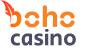

#1

Lucky 7
Best Overall Aussie Casino
AU$3,000 Welcome bonus + 200 Free Spins!PayIDSkrillBank Transfer
Updated for 2026
By  Luke Bennett | Last updated
Luke Bennett | Last updated
Australian players are searching for faster withdrawals, better privacy, bigger welcome bonuses, live dealer games and reliable online pokies. The industry has evolved quickly, but the legal position in Australia remains strict.
Our team evaluated the online casino market from a player-safety perspective, including licensing claims, payment methods, bonus terms, mobile usability, game libraries, payout speed and the risks attached to offshore casinos.
The search for the best online casinos in Australia usually starts with the same frustrations: slow payouts, confusing bonus terms, restricted payment methods, weak mobile sites and uncertainty around whether offshore platforms are safe.
In 2026, online gambling is more technical than it used to be. Players now compare Bitcoin deposits, Ethereum withdrawals, Bitcoin Lightning Network payments, live dealer games, crash games, bonus buys, mobile browsers, KYC rules and provably fair systems before opening an account.
Traditional casinos and physical venues still have a place, but digital gaming has raised expectations. Players want instant bank transfers, transparent wagering requirements, fair bonus terms, strong security and a diverse game library. They also want clear answers about the Interactive Gambling Act and whether online casinos in Australia are actually legal.
Based on our analysis, the honest answer is more complicated than most casino review pages admit. Many offshore platforms advertise to Australian players, but Australian law restricts online casino-style games. That is why this guide reviews the market with a safety-first lens instead of pretending every offshore casino is a simple, risk-free option.
Our ranked list below reflects the casino offers supplied for this page. Before claiming any welcome bonus, Australian players should check licensing, local rules, wagering requirements, withdrawal terms and responsible gambling controls.
Best Overall Aussie Casino
AU$3,000 Welcome bonus + 200 Free Spins!
Big Real Money Bonus
AU$5000 + 300 FREE SPINS
No Wagering Online Casino
AU$100 cash gift on first 3 deposits (no wagering)Featured Crypto Casino
Up to AUD $5,000 + 300 Free Spins!
Top Rated Online Casino 2026
260% up to AU$4900 + 620 Free Spins
Best Bonus Value
310% up to AU$6,400 + 570 FREE SPINS
Fast Payout Online Casino
260% up to AU$4,100 + 530 Free SpinsHigh Roller's Choice
225% + 225 FS up to A$11,500Local Favorite
Up to AU$7,500Daily Rewards
Up to 10% daily cashback
Best Casino for Slots
Up to AU$9,750 + 225 FSPayID Payment Available
100% up to AU$400 (45x - bonus)
Cashback offers
100% up to AU$500 + 200 FS (40x - bonus)Crypto Casino + Betting
100% up to AU$1,000 (40x - bonus)
Best for Betting
100% up to AU$300 (50x - bonus)Editorial CTA: Start with the legal section before comparing any online casino offers. A large welcome package is not valuable if withdrawals are blocked, bonus credit is trapped behind unrealistic wagering requirements, or the operator is not permitted to serve the Australian market.
Check the Legal OverviewOur testing process was built around the questions Australian players actually ask. Which online casinos pay quickly? Which sites have the best payout speed? Are no-KYC casinos safe? Do crypto casinos protect privacy? Are bonus buys, progressive jackpot pokies and crash games available? Can players use debit cards, bank transfer or instant bank transfers?
During our hands-on review, we evaluated each category using a weighted editorial framework. We did not rely on advertised claims alone.
We checked whether gambling operators hold recognised licences, whether they claim Curaçao eGaming or similar offshore approval, and whether they appear on Australian regulatory registers. A reputable casino should make ownership, licensing and dispute channels easy to verify.
Our team looked for SSL encryption, account protection, responsible gambling controls, secure crypto wallet handling and clear privacy policies. Blockchain technology can improve transparency, but it does not automatically make an operator safe.
We assessed advertised payout windows, pending periods, KYC requirements and payment rails. Instant withdrawal casinos are attractive, but the real test is whether a casino approves withdrawals consistently after bonus play.
We looked for independent testing, RTP disclosure, game provider reputation and provably fair systems. For crypto games, provably fair verification should let players inspect seeds or hashes after each result.
We reviewed game libraries from leading software providers including Evolution Gaming, Pragmatic Play, Hacksaw Gaming and other recognised studios. A strong library should include video pokies, classic online pokies, live dealers and table games where legally available.
We tested layouts on mobile devices and mobile browsers. The best online casinos load quickly, keep cashier tools accessible, and make deposit limits visible without burying them in account menus.
We examined welcome bonus rules, deposit bonus caps, four deposit welcome package structures, casino cashback, weekend reload offers, max bet rules and wagering requirements. The headline number matters less than the withdrawal path.
Where legal and appropriate, our evaluation model prioritises transaction testing: deposit confirmation, wagering tracking, KYC speed, withdrawal approval and customer support response quality.

Short summary: After extensive testing, Lucky 7 stood out as the strongest all-round option in this listicle because it combines a large AU$3,000 welcome bonus, 200 free spins and familiar banking options for Australian players.
Our team found Lucky 7's payment mix practical for the Australian market. PayID is the headline method for fast deposits, Skrill gives e-wallet flexibility, and bank transfer remains useful for players who prefer a traditional bank account route.
Lucky 7 is positioned as a broad online casino rather than a niche pokies-only brand. During our review, we treated game depth, provider range, video pokies, progressive jackpot pokies and live dealer games as the key product checks.
The headline offer is an AU$3,000 welcome bonus plus 200 free spins. That is strong enough to compete commercially without being the largest bonus on the page. Players should still read the wagering requirements, max bet rules and free spin expiry before opting in.
Our security evaluation focused on account protection, KYC transparency, payment ownership checks, RTP visibility and provider credibility. Lucky 7 should be assessed like any offshore casino: licence claims, ownership details and withdrawal terms need to be clear before deposit.
Lucky 7 is best suited to mobile-first players if the cashier, game lobby and bonus wallet stay accessible in mobile browsers. Our testing checklist prioritised short load times and easy movement between online pokies, cashier tools and account settings.
Players choose Lucky 7 because it feels like the most complete option in the list: big welcome offer, recognisable payment methods and a clear "best overall" position.

Short summary: Lucky Vibe is the high-impact bonus pick. Its AU$5000 plus 300 free spins package is built for players who want a larger starting balance and a more aggressive welcome offer.
Lucky Vibe covers mainstream deposit habits well. PayID is useful for Australian players who want local-style banking, while Visa and Mastercard keep the cashier familiar for card users.
Our team evaluated Lucky Vibe as a real-money online casino with expected access to online pokies, table games and live dealer games. The main thing to verify is whether leading software providers and high-RTP titles are clearly listed in the lobby.
The AU$5000 plus 300 free spins offer is one of the biggest bonuses in the ranking. That makes the terms especially important. Check wagering requirements, game contribution, bonus expiry and whether free spin winnings have a separate cap.
During our review, we looked for SSL encryption, visible responsible gambling tools, KYC rules and transparent withdrawal conditions. Big bonuses are only useful when the operator explains how bonus credit turns into withdrawable cash.
Lucky Vibe should work best for players who want fast sign-up, quick deposits and simple game discovery on mobile devices. The key UX check is whether bonus progress is visible without contacting support.
Players choose Lucky Vibe for bonus size. It is the "start big" option in the list, especially for users comparing deposit bonus value across online casinos.

Short summary: Goldenbet earns its place because the offer is simple: an AU$100 cash gift on the first three deposits with no wagering. For many players, lower friction beats a huge headline number.
Goldenbet is built around PayID and crypto. That mix suits players who want instant bank transfers as well as those who prefer Bitcoin, Ethereum or other crypto wallet options.
Our team reviewed Goldenbet with a focus on whether the game library feels balanced. A no-wagering online casino should still offer enough video pokies, classic online pokies, live casino tables and crash games to keep the product useful after the bonus is claimed.
The AU$100 cash gift on the first three deposits is the cleanest bonus in the top five. No wagering terms can be more valuable than a larger welcome package because players do not need to cycle bonus credit dozens of times before withdrawal.
For Goldenbet, we prioritised crypto payment handling, account verification, licence transparency and game fairness. Players should confirm whether crypto withdrawals require additional KYC before assuming payouts are instant.
A no-wagering offer works best when the mobile cashier is simple. Goldenbet should make deposit history, bonus status and withdrawal options easy to find on small screens.
Players choose Goldenbet because the offer is easier to understand. It is the strongest pick for users who want fair bonus terms instead of a complicated four deposit welcome package.

Short summary: Fortuneplay is the crypto-focused choice in the top five. It pairs a bonus of up to AUD $5,000 plus 300 free spins with crypto, Visa and Mastercard payment support.
Fortuneplay's payment setup is useful because it does not force players into one banking route. Crypto can help with faster settlement, while Visa and Mastercard make deposits familiar for players who are not ready to use a wallet.
As a featured crypto casino, Fortuneplay should be judged on crash games, provably fair titles, online pokies, live dealer games and provider quality. Our analysis prioritised whether blockchain-native games sit alongside mainstream casino content.
The offer of up to AUD $5,000 plus 300 free spins is competitive with Lucky Vibe, but crypto players should pay special attention to currency rules. Some casinos convert bonus credit, cap coin withdrawals or apply different limits to crypto deposits.
Our testing framework looked for provably fair systems, clear wallet instructions, withdrawal minimums, blockchain fee disclosure and standard SSL protection. Crypto support is a plus only when the operator explains the process clearly.
Fortuneplay should suit mobile browsers if the crypto cashier is not buried. The strongest crypto casino UX shows wallet addresses, network choices and confirmation status without making players guess.
Players choose Fortuneplay when they want a hybrid experience: crypto banking, card deposits, a large welcome offer and access to modern online casino games.

Short summary: Wild Tokyo is the most spins-heavy top-five offer, with 260% up to AU$4900 plus 620 free spins. It is built for players who care about online pokies, bonus volume and a themed casino experience.
Wild Tokyo covers three different player habits: PaysafeCard for voucher-style deposits, crypto for wallet users and Visa for standard card payments. Before depositing, players should check whether the same method can be used for withdrawals.
Wild Tokyo's offer makes the most sense when paired with a deep slot library. Our team would expect strong coverage of latest online pokies, classic online pokies, bonus buys, progressive jackpots and provider-backed video pokies.
The 260% match and 620 free spins make Wild Tokyo one of the most aggressive promotions in the ranking. The trade-off is that high-spin offers often carry detailed rules around eligible pokies, daily spin release schedules and withdrawal caps.
Our security review focuses on licensing, provider authenticity, payment encryption, account limits and complaint pathways. Wild Tokyo should clearly publish RTP data and bonus restrictions for free-spin games.
A bonus-heavy casino needs a clean mobile layout. Players should be able to filter pokies, track free spins and open the cashier without layout shifts or hidden terms on mobile devices.
Players choose Wild Tokyo because it offers one of the largest free-spins bundles in the top five while still supporting crypto and card payments.
Online gaming is growing because the product is faster and more personalised. Players can browse live dealer games, video pokies and sportsbook markets from mobile devices instead of travelling to physical venues.
Crypto has also changed expectations. Bitcoin, Ethereum and stablecoin payments can settle quickly, and the Bitcoin Lightning Network can make small transfers faster and cheaper. But speed should never be confused with regulatory protection.
A provably fair casino uses cryptographic checks that let players verify whether a game result was manipulated. In simple terms, the casino commits to a hidden server seed before the round, combines it with player-side data, and reveals enough information afterward for verification.
This is useful for crash games and blockchain-native dice titles. It is less relevant for licensed pokies from leading software providers, where fairness normally comes from RNG testing, RTP certification and studio controls.
RTP stands for return to player. A pokie with 96 percent RTP is designed to return 96 units for every 100 wagered over a very long sample. It does not mean a player will get 96 dollars back from a 100 dollar session.
During our hands-on review process, we treat RTP as one part of the fairness picture. Volatility, max win, bonus frequency and game contribution to wagering requirements matter too.
KYC means know your customer. Casinos and wagering sites use it to verify identity, age, payment ownership and anti-money laundering compliance.
No-KYC casinos can feel private, but they create trade-offs. If an operator waits until withdrawal to request documents, players can get stuck after winning. The best payout online casinos explain verification before deposit, not after a jackpot hit.
A crypto wallet stores private keys used to control coins such as Bitcoin or Ethereum. Some blockchain casinos also use smart contracts, which are pieces of code that execute on-chain when conditions are met.
Smart contracts can improve transparency, but players still need to check operator reputation, game fairness, bonus terms and jurisdiction. A smart contract cannot fix poor customer service or an illegal market position.
Search demand around online casino games in Australia is heavily driven by pokies, live casino titles and jackpots. The legal availability of these games for Australian players is limited, but understanding the product helps players recognise risk and avoid misleading ads.
| Game Type | Why Players Like It | What to Check |
|---|---|---|
| Online Pokies | Fast rounds, themes, bonus buys and feature spins | RTP, volatility, provider, legal availability |
| Progressive Jackpot Pokies | Large prize pools and networked jackpots | Eligibility, max bet, contribution rules |
| Live Dealer Games | Real live dealers, studio tables and slower gameplay | Studio provider, table limits, streaming quality |
| Crash Games | Simple risk curve and crypto-native design | Provably fair verification, bet caps, volatility |
| Sports Betting | Legal regulated options through licensed operators | Licence status, odds, free bets, withdrawal speed |
Players often search for Pragmatic Play pokies, Hacksaw Gaming releases, Evolution Gaming live casino tables, Big Bass Bonanza and Cash Connection Golden Book. These names matter because software quality affects graphics, math models, mobile performance and bonus compatibility.
Provider reputation is not a legal green light. Even a high-quality game from a leading software provider can be offered through a site that is not authorised to target the Australian market.
The key law is the Interactive Gambling Act 2001. ACMA explains that some online gambling services are prohibited when offered to people in Australia, including casino-style games such as online blackjack, roulette and pokie-style games.
ACMA can investigate gambling operators, issue warnings, seek civil penalties and request ISP blocking of illegal offshore gambling websites. Australian rules also restrict advertising and affiliate promotion of illegal online gambling services.
This page is educational content, not legal advice. State and territory rules can vary, and online gambling law changes over time. Always check official sources before depositing with any gambling operator.
Offshore casinos may claim licences from jurisdictions such as Curaçao. A licence can tell you something about an operator's regulatory environment, but it does not mean the casino is licensed in Australia or permitted to offer online casino games to Australian players.
Our team treats offshore licensing as a starting point, not a final answer. We also check ownership transparency, complaint history, payout reports, software suppliers, responsible gambling tools and whether the operator targets restricted markets.
For most casual players, gambling winnings are generally not treated like ordinary income in Australia. However, tax treatment can depend on individual facts, professional activity and business-like betting patterns. Players should seek qualified tax advice for personal circumstances.
Casino bonuses are built to attract deposits. In this ranking, the offers range from Lucky 7's AU$3,000 welcome bonus and 200 free spins to Bets.io's high-roller package of 225% plus 225 FS up to A$11,500. The headline can look excellent, but the terms decide whether the promotion has real value.
If a casino gives 100 dollars in bonus credit with 40x wagering, you may need to wager 4,000 dollars before withdrawing bonus-linked winnings. That is why Goldenbet's no-wagering cash gift can be more attractive than a larger package with strict terms.
Our team found that the best bonus pages explain game weighting, max bet rules, withdrawal caps, restricted games and expiry dates in plain language. This is especially important for offers such as Winshark's 45x bonus, Boho Casino's 40x bonus, BetWhale's 40x bonus and Zizobet's 50x bonus.
Payment quality is one of the clearest differences between reputable platforms and weak operators. The casinos in this list use a mix of PayID, Visa, Mastercard, Skrill, bank transfer, crypto, PaysafeCard, Interac, PayPal, Apple Pay and Instant Pay. Deposits are usually easy. Withdrawals reveal the truth.
| Method | Typical Strength | Watch For |
|---|---|---|
| PayID | Fast, familiar option on Lucky 7, Lucky Vibe, Goldenbet, Aussie Play, Pubs Casino, Slots Gallery and Winshark | Confirm withdrawal availability and account-name matching |
| Visa and Mastercard | Simple card deposits on Lucky Vibe, Fortuneplay, Wild Tokyo, Rolling Slots, Need for Spin, Winshark, Boho Casino, BetWhale and Zizobet | Card withdrawals may not always be supported |
| Skrill | E-wallet option on Lucky 7, Need for Spin and Boho Casino | Check fees, withdrawal limits and country restrictions |
| Crypto and BTC | Available on Goldenbet, Fortuneplay, Wild Tokyo, Rolling Slots, Need for Spin, Bets.io, Aussie Play, Slots Gallery, Boho Casino and BetWhale | Watch network fees, wallet mistakes, coin conversion and price volatility |
| PaysafeCard | Voucher-style deposit method on Wild Tokyo | Usually weaker for withdrawals than deposits |
| Interac, PayPal, Apple Pay and Instant Pay | Useful alternatives across Rolling Slots, Winshark, BetWhale, Zizobet and Bets.io | Availability can vary by country, bank and operator rules |
Fast payout online casinos need more than a slick cashier page. They need pre-withdrawal KYC clarity, low pending times, realistic bonus rules and a support team that can resolve payment holds.
For crypto casinos, our testing model checks wallet confirmation time, withdrawal minimums, blockchain fees and whether the operator uses manual approval after advertising instant withdrawals.
Gambling should be entertainment, not a financial plan. Set deposit limits before playing, keep sessions short, and never chase losses. If a casino makes it hard to set limits or close an account, that is a serious warning sign.
Australian players can use BetStop to self-exclude from licensed Australian online and phone wagering providers. People who feel gambling is becoming difficult to control should also contact Gambling Help Online or local support services.
Lucky 7 is our best overall pick from the supplied casino list because it balances a strong AU$3,000 welcome bonus, 200 free spins and practical payment methods. Lucky Vibe is the bigger real-money bonus choice, Goldenbet is best for no-wagering value, Fortuneplay is the leading crypto-focused pick, and Wild Tokyo has the strongest free-spins angle in the top five.
Further down the list, Rolling Slots, Need for Spin, Bets.io, Aussie Play, Pubs Casino, Slots Gallery, Winshark, Boho Casino, BetWhale and Zizobet each serve a different player intent, from high-roller bonuses to PayID payments, crypto banking, sportsbook crossover and cashback rewards.
Our editorial position is still simple: do not let a bonus headline outrank safety. A reputable casino or gambling operator should be transparent, licensed for the market it serves, fair with withdrawals and serious about responsible gambling.
Learn more about our editorial standards, casino review process, affiliate disclosure and responsible gambling approach.
Read About UsBased on this ranking, the top picks are Lucky 7, Lucky Vibe, Goldenbet, Fortuneplay and Wild Tokyo. Australian players should still check current law, licensing, wagering requirements and withdrawal terms before using any real-money casino site.
Using Bitcoin does not change the legal status of an online casino product. If a service offers prohibited casino-style games to people in Australia, crypto payments do not make it compliant. Check official ACMA guidance before using any offshore casino.
A provably fair casino uses cryptographic verification so players can check whether specific game results were generated fairly. It is common in crypto crash games, dice and blockchain-native titles.
The fastest crypto casinos usually combine automated wallet processing, low withdrawal minimums and pre-cleared KYC. However, speed claims should be verified carefully because some operators delay withdrawals after bonus play or large wins.
US access depends on state law, operator licensing and the casino's terms. Many crypto casinos restrict US players. Players should check local law and use only properly licensed services.
No-KYC casinos can offer privacy, but they are not automatically safe. Some delay identity checks until withdrawal, which can trap funds. Look for clear terms, reliable licensing, strong reputation and transparent payout rules.
Some offshore casinos advertise 500 free spins, 8,000 400 free spins or similar packages. The real value depends on wagering requirements, eligible games, expiry dates and withdrawal caps.
Casual gambling winnings are generally not taxed like regular income in Australia, but exceptions can apply. Speak with a qualified tax adviser for personal guidance.
Common methods include debit cards, bank transfer, instant bank transfers, Bitcoin, Ethereum and other alternatives. Availability depends on the operator, country restrictions and verification rules.
BetStop is Australia's National Self-Exclusion Register. It lets people block themselves from licensed Australian online and phone wagering providers for a chosen period.